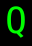

記号 Q のモンスター / Monsters with symbol Q
画面上で Q と表示されるモンスター（13 種）。
Monsters displayed as Q on screen (13).
← 記号から探す / Browse by symbol · モンスター索引 / Index
| ID | 記号 / Sym | 名前 / Name | 階層 / Lv | 希少度 / Rar | 速度 / Spd | 体力 / HP | AC | 経験値 / Exp |
|---|---|---|---|---|---|---|---|---|
| 342 | クイルスルグ Quylthulg |
20 | 1 | 110 | 6d8 | 1 | 250 | |
| 480 | ネクサス・クイルスルグ Nexus quylthulg |
32 | 1 | 110 | 10d12 | 1 | 300 | |
| 572 | 『グレーター地獄魔法おばけキノコ=クイルスルグ人間』 The Greater Hell Magic Mushroom Were-Quylthulg |
36 | 3 | 120 | 19d99 | 80 | 2500 | |
| 633 | 腐乱クイルスルグ Rotting quylthulg |
40 | 1 | 120 | 16d10 | 1 | 1500 | |
| 727 | デーモン・クイルスルグ Demonic quylthulg |
51 | 1 | 120 | 48d10 | 1 | 3000 | |
| 1260 | 天使・クイルスルグ Angel quylthulg |
51 | 2 | 120 | 48d10 | 1 | 3000 | |
| 759 |  |
ドラゴン・クイルスルグ Draconic quylthulg |
55 | 3 | 120 | 72d10 | 1 | 5500 |
| 800 | マスター・クイルスルグ Master quylthulg |
71 | 3 | 120 | 20d100 | 1 | 12000 | |
| 801 | グレーター・ドラゴン・クイルスルグ Greater draconic quylthulg |
71 | 3 | 120 | 15d100 | 1 | 10500 | |
| 802 | 腐乱グレーター・クイルスルグ Greater rotting quylthulg |
71 | 3 | 120 | 15d100 | 1 | 10500 | |
| 1261 | グレーター・クイルスルグ Greater quylthulg |
71 | 3 | 120 | 15d100 | 1 | 10500 | |
| 821 | 『エンペラー・クイルスルグ』 The Emperor Quylthulg |
78 | 3 | 130 | 50d100 | 1 | 20000 | |
| 822 | 肉塊の帝王『クルズククルズップ』 Qlzqqlzuup, the Lord of Flesh |
92 | 3 | 130 | 65d100 | 1 | 75000 |
🤖 このページは
lib/edit/MonraceDefinitions.jsoncから自動生成されています。手動で編集しないでください — 変更は次回の再生成で上書きされます。 This page is auto-generated fromlib/edit/MonraceDefinitions.jsonc. Do not edit by hand — changes are overwritten on regeneration. 生成 / Generated: 2026-07-04 03:44 UTC · hengband5ebae9734·tools/generate-wiki.mjs